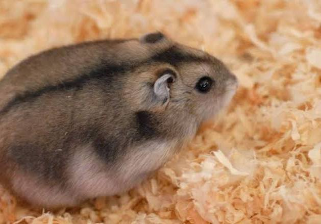

El hámster ruso es un pequeño hámster enano, popular como mascota por su naturaleza tranquila y curiosa, con un pelaje grisáceo y vientre blanco y una franja negra dorsal que puede cambiar a blanco en invierno. Mide entre 7 y 11 cm y vive entre 2 y 3 años. Es un animal nocturno y crepuscular que necesita una rueda para hacer ejercicio y escondites. Su dieta debe ser rica en proteínas y puede complementarse con frutas y verduras, pero se deben evitar los azúcares.
